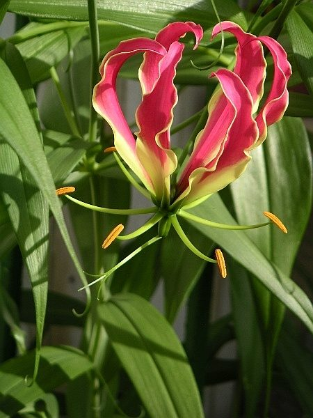

कलिहारीFlame Lily
Gloriosa superba · Colchicaceae · FLR-0254

- Scientific name वैज्ञानिक नाम
- Gloriosa superba L.
- Family कुल
- Colchicaceae
- Hindi हिंदी
- कलिहारी
- Local names स्थानीय नाम
- kalihari, kalihaari, kaliyari, flame lily, glory lily
- Status here यहाँ की स्थिति
- native
- Movement आवागमन
- Resident, here all year
- Known from कहाँ दर्ज
- Others have published records from the Basti–Ayodhya districts बस्ती–अयोध्या के ज़िलों से दूसरों के प्रकाशित अभिलेख
- IUCN IUCN
- not evaluated
- Review समीक्षा
- audited and independently read
When to look कब देखें
Expected mainly in July, August, September, October. मुख्यतः जुलाई, अगस्त, सितंबर, अक्टूबर में अपेक्षित।
Uses and possibilities उपयोग और संभावनाएँ
“Traditional medicine” means a documented traditional use, not a claim that it works. Nothing on this page is medical advice.
Drawn from the documented uses in the profile below, where each is labelled traditional, current or a research lead. All uses →
कलिहारी / Flame Lily
Gloriosa superba L. — Colchicaceae
कलिहारी — एक विदेशी बेल जिसके फूल सोने और लाल रंग के होते हैं, जो आग की लपटों जैसे लगते हैं। इसके फूलों की खूबसूरती के कारण इसे बाग़ों में उगाया जाता है। पर पूरा पौधा ज़हरीला है — विशेषकर जड़ (कंद) बहुत ख़तरनाक है। आयुर्वेद में पारंपरिक औषधि के रूप में प्रयुक्त होता है, पर सावधानी से ही लिया जाता है।
Quick Identification त्वरित पहचान
| Feature | Description |
|---|---|
| Growth Habit | Herbaceous climbing vine, 1–2 m tall; grows from a tuberous rhizome |
| Leaves | Alternate, lanceolate, 8–15 cm long; tendril at the tip of each leaf |
| Flowers | Solitary axillary flowers; 6 petals, reflexed at tips; yellow at base, red to orange at margins; stamens and style bright yellow |
| Fruit | Elongated capsule, 5–7 cm; contains many black seeds |
| Stem | Green, climbing or trailing, support-seeking |
| The test | Unmistakable flame-coloured flowers with reflexed petals; no other plant like it locally |
Field tip: Look for a climbing herb with lanceolate leaves that have tendril-like tips, bearing strikingly reflexed flame-coloured flowers (yellow base, red/orange margins) in mid-to-late monsoon. Often grown in gardens for its ornamental value.
Morphology आकारिकी
Biometrics (cultivated plants in eastern India):
| Measurement | Range |
|---|---|
| Vine length | 1–2 m |
| Leaf length | 8–15 cm |
| Leaf width | 2–4 cm |
| Flower diameter | 5–8 cm |
| Petal length | 4–5 cm |
| Tuber length | 10–15 cm |
Tuber and roots: Underground; elongated, tuberous, yellow to brown; produces new shoots annually.
Stem: Green, herbaceous, smooth or slightly grooved, climbing via leaf tendril.
Leaves: Alternate, simple, lanceolate to linear, entire margin, glabrous above and below. The apical portion of each leaf is modified into a thread-like tendril for climbing.
Flowers: Solitary, axillary; six tepals (petals and sepals united as tepals), bright yellow basally, becoming red or orange-red at the apical portion, reflected (bent backward) at the tips; six stamens with anthers, and a style protruding beyond; flowers are visited by insects.
Fruit: An elongated, three-chambered capsule, 5–7 cm long, dehiscent at maturity. Contains many seeds.
Toxins: The entire plant, especially the tuber, contains colchicine and related alkaloids, which are highly toxic. Colchicine is a mitotic poison.
हिंदी: भूमिगत कंद से हर साल नई बेल निकलती है। पत्ती के सिरे पर सुई जैसा तंतु जिससे यह चढ़ता है। फूल सोने और लाल रंग के, पीछे की ओर मुड़े हुए। बीज काले, कैप्सूल में।
Behaviour & Ecology व्यवहार और पारिस्थितिकता
Gloriosa superba is a perennial climbing herb of tropical and subtropical regions. It is native to tropical Africa and Asia, including India, where it grows wild in hedges and scrub. The plant is drought-deciduous, dying back to the tuber during the dry season and re-emerging with the monsoon. It is often cultivated as an ornamental for its showy flowers. The plant supports some insect pollinators, though detailed studies from eastern UP are absent.
हिंदी: गर्मी में पत्ती गिर जाती है; बेल सूख जाती है। पहली बारिश के साथ नई बेल निकलती है। इसके फूलों पर कीड़े आते हैं।
Life Cycle / Phenology जीवन चक्र
| Month / season | Event |
|---|---|
| November–May | Dormancy; tuber underground, resting |
| June | New shoots emerge with rains |
| July–August | Vegetative growth; tendril formation |
| July–October | Flowering (peaks August–September) |
| October–November | Fruit ripening; above-ground senescence |
| November onward | Tuber enters dormancy |
Seeds are viable but require scarification or warm stratification for germination. Tubers can be lifted and stored dry for replanting.
हिंदी: सर्दी में बेल सूखकर गायब हो जाती है। बारिश में निकलती है। अगस्त-सितंबर में फूल। अक्टूबर में फल।
Associated Species / Interactions संबंधित प्रजातियाँ
- Pollinators: Bees and flies visit the flowers for nectar and pollen.
- Seed dispersal: Seeds fall near the parent plant or may be dispersed by water in monsoon floods.
Pests and Diseases कीट और रोग
- Leaf spot fungi in humid seasons.
- Generally resistant to major pests due to alkaloid toxins.
- Slugs may feed on tubers in wet soil.
Agricultural / Human Relevance कृषि प्रासंगिकता
Caution: Toxicity
The entire plant is toxic, with the tuber being the most concentrated source of colchicine and related alkaloids. Ingestion of any part can cause severe poisoning. Symptoms include burning of the throat, vomiting, diarrhoea, abdominal pain, and in severe cases, cardiac arrhythmia and kidney failure. Handling the plant can cause skin irritation in sensitive individuals.
Traditional medicinal use (documented in ethnobotanical literature; not medical advice):
- Rheumatism: Traditionally prepared in oils for external application to arthritic joints; colchicine is known to have anti-inflammatory properties, but home preparation is dangerous.
- Gout: Colchicine-containing plants are used in classical systems, but only under medical supervision in modern contexts.
The tuber is harvested locally in some regions and dried for medicinal use, but improper dosing can be fatal. Modern pharmaceutical colchicine is derived from such plants but is standardized and prescribed only by medical practitioners.
Ornamental value: Sometimes grown in gardens for its spectacular flame-coloured flowers.
Research direction (a lead, not a result): Colchicine is studied for cancer chemotherapy and gout treatment in modern pharmacology, but extraction and standardization is laboratory work.
हिंदी: पूरा पौधा ज़हरीला है — विशेषकर कंद। औषधि के लिए प्रयुक्त होता है, पर बहुत सावधानी से। गलत मात्रा जानलेवा हो सकती है। बाग़ों में सुंदरता के लिए लगाया जाता है।
Expected Locally स्थानीय रूप से अपेक्षित
Not a field record. Written from published accounts for eastern Uttar Pradesh. No confirmed local sighting yet — if you have seen it, that is what the atlas needs.
अभी तक स्थानीय पुष्टि नहीं। यह विवरण प्रकाशित स्रोतों से है, किसी अवलोकन से नहीं।
Gloriosa superba is likely to be found as a cultivated ornamental in the gardens of towns and larger villages in Basti district, flowering during the monsoon and early post-monsoon season (July–October). GBIF holds published records from the wider Awadh–Purvanchal plain, none yet from Basti–Ayodhya. A first confirmed local record would be a photograph showing the distinctive reflexed flame-coloured flowers with place and date.
Distribution वितरण
Global range: Native to tropical Africa and tropical Asia, from Sudan to India and southern China.
In India: Widely cultivated as an ornamental; naturalized in some regions.
In Uttar Pradesh: Grown in gardens and parks; occasionally escaped.
In Basti district / eastern UP: Garden cultivation only; not naturalized in the wild.
Research Questions शोध प्रश्न
Anyone can investigate these | कोई भी इन प्रश्नों की जाँच कर सकता है
- In how many village gardens in your area is Flame Lily grown, and is it spreading beyond cultivated ground? — Walk the village and note every plant; map locations.
- What insects visit the flowers, and at what times of day? / फूलों पर कौन-कौन से कीड़े आते हैं? — Observe for 30 minutes each morning and evening.
- How long does a tuber survive if dried and stored in a cool dry place? — Store tubers for 6, 12, and 18 months; test for sprouting ability.
- Has anyone in your village used this plant traditionally for joint pain, and what was the outcome? / क्या किसी ने इसका पारंपरिक औषधीय उपयोग किया है? — Interview local practitioners; record preparations and dosages (with medical disclaimer).
- Do the flowers attract different insect species at different times during their open period? — Photograph and identify insects visiting the same flower over hours.
Similar Species मिलती-जुलती प्रजातियाँ
| Species | How to tell apart | हिंदी |
|---|---|---|
| bougainvillea (Bougainvillea spectabilis) | Climbing shrub; leaves are simple and non-tendriled; bracts are coloured, not petals | बूगनविलिया — पत्तियों पर कोई सुई नहीं, रंगीन पत्ते (bracts) |
| Trumpetflower (Campsis) | Tubular red-orange flowers, not reflexed; compound leaves | कंस — ट्यूब जैसे फूल, पंखदार पत्तियाँ |
| Fire-flame Bush (Woodfordia fruticosa) | Shrub, not vine; small tubular red flowers; no tendrils | ढाई फूल — झाड़ी, छोटे फूल, बेल नहीं |
Field rule: A tendril-bearing climbing vine with flame-coloured reflexed flowers (yellow base, red margins) blooming in monsoon is Gloriosa superba.
Taxonomy & Classification वर्गीकरण
Original description. Carl Linnaeus described this species as Methonica superba in 1753 in Species Plantarum. It was later transferred to the genus Gloriosa by Robert Brown in 1810 (Prodromus Florae Novae Hollandiae). The genus name Gloriosa refers to the glory of the flowers, and superba means superb or proud.
Subspecies. Monotypic — no subspecies are currently recognised.
Family and order placement. Placed in the order Liliales, family Colchicaceae (formerly classified in Liliaceae). The family is known for alkaloid production.
Phylogenetic notes. Gloriosa is a monotypic genus, closely related to Colchicum and other colchicine-containing genera.
IUCN status rationale. Not evaluated. Widespread in cultivation; wild populations in India are poorly assessed.
Photo Gallery फोटो गैलरी
Photos needed आवश्यक फोटो
- [ ] Whole vine climbing over support (पूरी बेल)
- [ ] Close view of flame-coloured reflexed flowers (फूल)
- [ ] Leaf detail showing tendrils (पत्तियाँ और सुइयाँ)
- [ ] Developing fruit capsule (फल)
No photos yet — add field photos to media/species/flame_lily/ and run node scripts/sync_photos.js.
References संदर्भ
- Linnaeus, C. (1753). Species Plantarum, Vol. 2, p. 976. Laurentii Salvii, Holmiae. [as Methonica superba]
- Brown, R. (1810). Prodromus Florae Novae Hollandiae. William Nicol, London.
- Hooker, J.D. (1892). Flora of British India, Vol. 6. L. Reeve, London.
- Chopra, R.N., Nayar, S.L. & Chopra, I.C. (1956). Glossary of Indian Medicinal Plants. CSIR, New Delhi.
- De Wilde, W.J.J.O. & Duyfjes, B.E.E. (2006). A revision of the genus Gloriosa L. (Colchicaceae). Adansonia, 28(1), 101–115.
- GBIF Occurrence Data — Gloriosa superba, India (2010–2025).
Source file: species/flora/medicinal/flame_lily.md